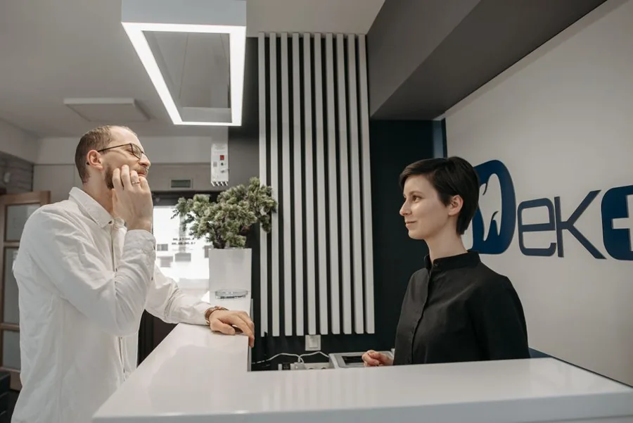
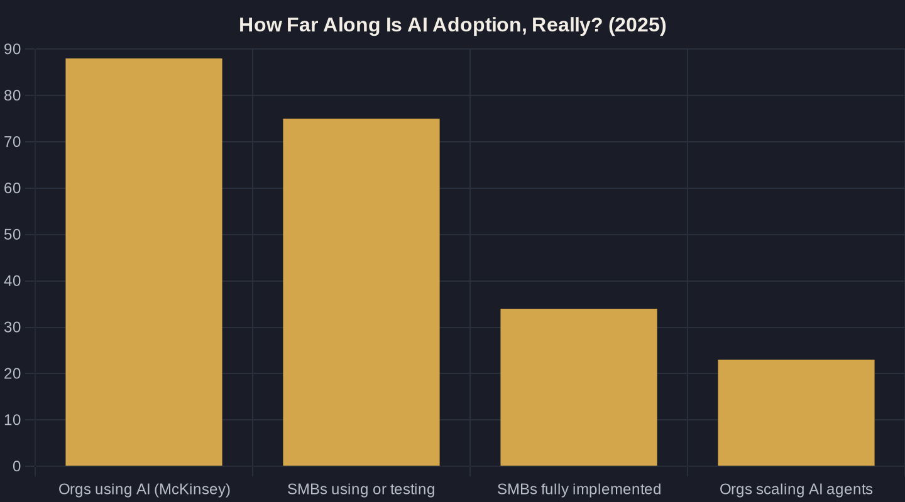

AI for Local Service Businesses: What to Automate First
The smartest local owners don't buy the most AI — they automate in the right order. Here's where to point it first, scored with Owner's Math.
Key takeaways
- Automate revenue-adjacent work first: instant lead reply, missed-call follow-up, and review requests beat flashy tools every time.
- 88% of organizations use AI, but only 34% of SMBs have fully implemented it — moving deliberately past pilot mode is the real edge.
- Content is the cheapest high-leverage automation; let AI draft, but your judgment and voice are what ship.
- Never automate a process you can't measure — put AI on top of clean Owner's Math attribution, not in place of it.
- Follow a 90-day order of operations: protect revenue, then warm the pipeline, then connect the pieces to compound.
AI for Small Business: Start With the Money, Not the Magic
Walk into any local service business right now and you'll find the owner getting pitched on AI from five directions at once: chatbots, call agents, content tools, scheduling assistants, and dashboards that promise to do it all. The pressure to adopt something is real, and it's backed by the numbers. McKinsey found that 88% of organizations now use AI in at least one business function, up from 78% a year earlier — adoption has crossed from experimental to mainstream.
But everyone's using it is not a strategy, and it's a poor reason to buy software. The useful question for AI for small business is narrower: of all the work your team does every week, which tasks should a machine take over first? Get the order wrong and you'll spend money automating things that never touched your revenue.
This is an Owner's Math problem — Owner's Math being the practice of tracing what every dollar of marketing and overhead actually returns. Before you automate anything, you want to know which task, once handled by AI, shortens the path from a stranger seeing your ad to a booked, paid job.
What "AI for Small Business" Actually Means Day to Day
Strip away the hype and AI for small business comes down to two kinds of help: drafting (writing emails, replies, posts, summaries) and doing (answering calls, following up on leads, qualifying inquiries, updating records). Most owners only picture the first kind, which is why they underestimate the payback of the second.
Adoption is wide but shallow. Salesforce reports that 75% of small and medium businesses are experimenting with or using AI, yet only 34% have fully implemented it — meaning roughly two-thirds are still stuck in pilot mode. The gap between trying and embedding is where the advantage lives for owners who move deliberately.
The leading edge is shifting from drafting to doing. McKinsey notes that 23% of organizations are already scaling an agentic AI system and another 39% are experimenting with AI agents that handle multi-step workflows. You don't need to be on that frontier yet — but you should automate in a way that grows toward it.

Automate the Tasks Closest to Revenue First
The first thing to automate in any local service business is the handoff between a new lead and a human response. A form fill or missed call that sits for an hour is a job quietly walking to your competitor. AI that texts back instantly, books the slot, or routes the call after hours is the single highest-leverage automation most owners can install — which is why I treat speed-to-lead as job one, not a nice-to-have.
The efficiency case is no longer theoretical. 90% of SMBs using AI say it makes their operations more efficient, and the gains are largest on routine, repeatable tasks — exactly the kind of work that clogs a small front office.
Reputation is the close second. Automated, well-timed review requests after a completed job compound into the local search visibility that lowers your cost to win the next customer. Both of these are cheap to set up and sit right on top of money.
Content Is the Cheapest Lever You're Not Pulling
After the revenue-adjacent tasks, content is where AI for small business earns its keep with the least risk. HubSpot reports that 80% of marketers now use AI for content creation, including email copy and blog articles — work that used to eat an owner's entire weekend.
For a local business, that lever is unusually long. HubSpot also found small businesses are 23% more likely than average to see ROI from blog posts (ROI = return on investment), because a single well-targeted article can rank for years against competitors who never publish.
The catch: AI drafts, you don't ship unedited. The revenue case is real — 91% of SMBs using AI say it boosts their revenue — but only when the output carries your judgment and your voice, not a generic machine tone a customer can smell.
| Automation | Revenue proximity | Setup effort | Priority |
|---|---|---|---|
| Instant lead reply + missed-call follow-up | Direct | Low | Do first |
| Review & reputation requests | Indirect | Low | Do first |
| Lead qualification & intake notes | Direct | Medium | Do next |
| Blog & email content drafting | Indirect | Low | Do next |
| Reporting & attribution | Enabler | Medium | Do alongside |
| Full agentic, end-to-end workflows | Varies | High | Wait |

Never Automate a Process You Can't Measure
Here's the rule that keeps AI for small business from becoming an expensive toy: don't automate a process you can't measure. If you can't see whether a faster lead response produced more booked jobs, you can't tell whether the automation paid for itself — you've just added software.
Most owners hit a wall here because the data is broken before AI ever enters the picture. That's the attribution gap: the disconnect between what marketing spent and what it actually produced. Automate the measurement layer alongside the doing layer, or you'll scale activity you can't price.
This is the whole point of measuring marketing ROI the Owner's Math way — tracing one dollar from impression to lead to booked job to revenue. AI belongs on top of that spine, not as a substitute for it.
A Simple 90-Day Order of Operations
Sequence beats ambition. In the first 30 days, automate instant lead response and missed-call follow-up, and turn on automated review requests — the moves that protect revenue you're already paying to generate. Pair them with clean tracking so you can see the lift.
In days 30 to 60, add AI-assisted content and intake qualification, so the right leads reach a human faster and your pipeline stays warm. This is also when you'll start spotting the money leaks that automation quietly plugs — the duplicate follow-ups, the dropped quotes, the ad spend going to terms that never convert.
Days 60 to 90 are for compounding: connect the pieces so a lead flows from ad to response to booking to report without manual re-keying, and watch your cost per booked job fall as the system absorbs the busywork.
Where to Point AI First
The owners who win with AI for small business aren't the ones who buy the most tools — they're the ones who automate in the right order. Start where the work is repeatable and the dollars are close: lead response, follow-up, reviews, then content, all sitting on measurement you trust.
Everything else can wait until those foundations are paying you back. The frontier of agentic AI will still be there in a year, and you'll reach it faster from a base that already runs clean.
If you want a clear read on which automation would move your numbers first, that's exactly the work I do with owners one-on-one. Map your Owner's Math with me on a call, or join the newsletter where I break down one local-business automation — and what it's actually worth — each week.
Sources
Want this run on your numbers?
Book a call and we will run the Owner's Math on your business — clear numbers, a straight plan, no pitch. Or read the free Playbook first.